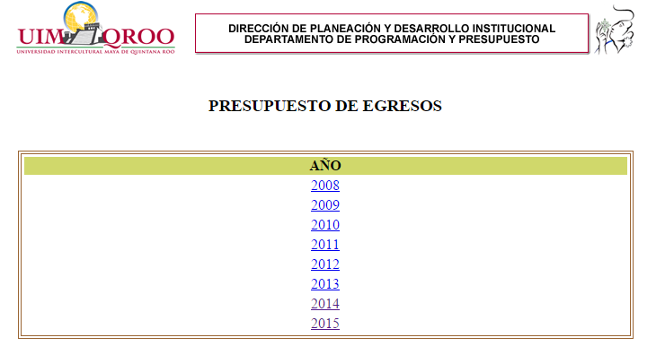
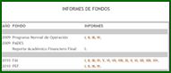

CAPTURA Y CONSULTA DE INFORMACIÓN CONCENTRADA EN EL DEPARTAMENTO
GOOGLE SITES.- Los invitamos a visitar el sitio del Departamento del Programación y Presupuesto, les damos la mas cordial bienvenida a nuestro portal, el cual nos permite compartir y trabajar información crucial de nuestra labor institucional de manera colaborativa. El acceso a este sitio es solo para usuarios de la Universidad con permiso otorgado por el DPP.

PRESUPUESTO DE EGRESOS.- En esta sección se podrá consultar el presupuesto de la Universidad Intercultural Maya de Quintana Roo y es de libre acceso.

INFORME DE FONDOS.- En esta sección se podrán consultar los informes trimestrales de los fondos a cargo de la Universidad Intercultural Maya de Quintana Roo y es de libre acceso.
INFORMES TRIMESTRALES DEL POA.- En esta sección podrán consultar los informes trimestrales del presupuesto ejercido en la Universidad Intercultural Maya de Quintana Roo y es de libre acceso.
CAPTURA DEL POA INSTITUCIONAL.- En esta sección se puede realizar la captura del POA por UR y UE y es solo para los usuarios de la Universidad que cuentan con una clave de acceso.
CAPTURA DE FONDOS Y PROYECTOS.- En esta sección se puede realizar la captura de fondos y proyectos de la Universidad por UR y UE y es solo para personal de la Universidad con clave de acceso.
PROYECTOS PFCE.- En esta sección se puede realizar la captura de solicitudes de aplicación o reembolso de recursos de los proyectos PFCE. El acceso es solo para el personal de la Universidad que participa en algún proyecto y con clave de acceso.
Jefa del Departamento: Lic. Yuliana Margarita Santos Salgado
Analista de Programación y Presupuesto: Lic. Ernesto Nah Mex